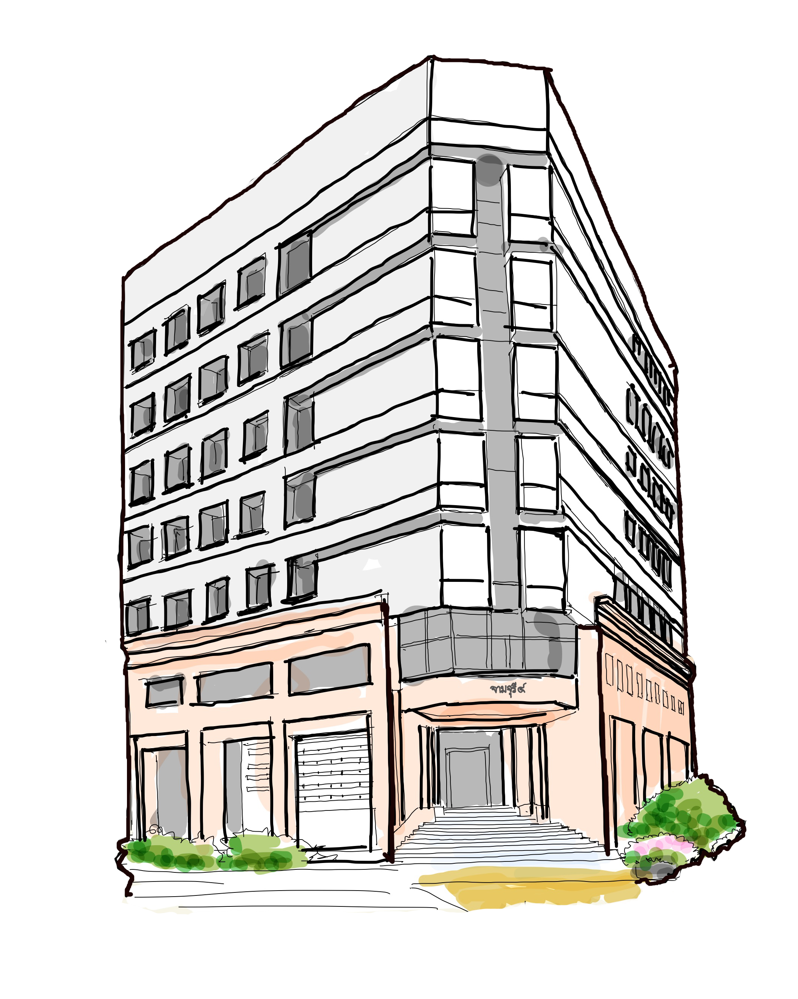

<div class="info-window">
    <div class="info-window-header">
        
        <h1>อาคารจามจุรี 4</h1>
        <h3>CHAMCHURI 4</h3>
        
        <div class="facility"></div>
    </div>
    <div class="info-window-pic">
        
    </div>
    <div class="info-window-content">
        <div>
            <p>“อาคารจามจุรี 4” เป็นอาคารสำนักงานที่ตั้งอยู่ตรงข้ามหอสมุดกลาง และสามารถเดินเข้ามาจากอาคารจามจุรี 1-2 ผ่านสวน<br>ทางใต้ตึกมีนิทรรศการบุคคลสำคัญที่เคยมาเยือนจุฬา</p>
        </div>
        <button></button>
    </div>
</div>

.info-window{
    background-color: #F1E4E5;
    border-radius: 10px;
    position: relative;
    height: 50svh;
    width: 50svw;
}

.info-window-header{
    position: absolute;
    width: 100%;
    height: 20%;
    top: 0;
    left: 0;
    background-color:#F7B5BB;
}

.info-window-pic{
    background-color:#fff;
    position: absolute;
    top: 30%;
    left: 5%;
    width: 40%
    height: auto;

}
.info-window-content{
    position: absolute;
    top: 30%;
    left: 55%;
    width: 40%
    height: auto;
}
.info-window-header img{
    
}